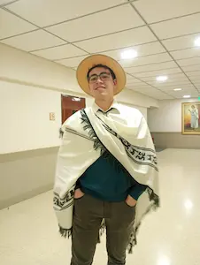

Tobias Aguilar
About me
My name is Tobias, I am from a small city in the province of Buenos Aires, Argentina, called Pergamino. In my family there are 9 people: my dad, my step mom and 6 siblings besides me. I am the 2nd youngest. Being 22 years old now. I am studying and trying to build a good future to get a family too. I am also as a Mentor for the new Preach My Gospel Training for new missionaries in field.
Buenos Aires, Argentina
Pergamino is a calm city. It is one of the three cities that conform the "nucleo", as it is called here in Argentina. With Salto, Buenos Aires; and Rosario, Santa Fe. It is the "nucleo" because of the rich ground to grow soy, one of the main exports of our country.